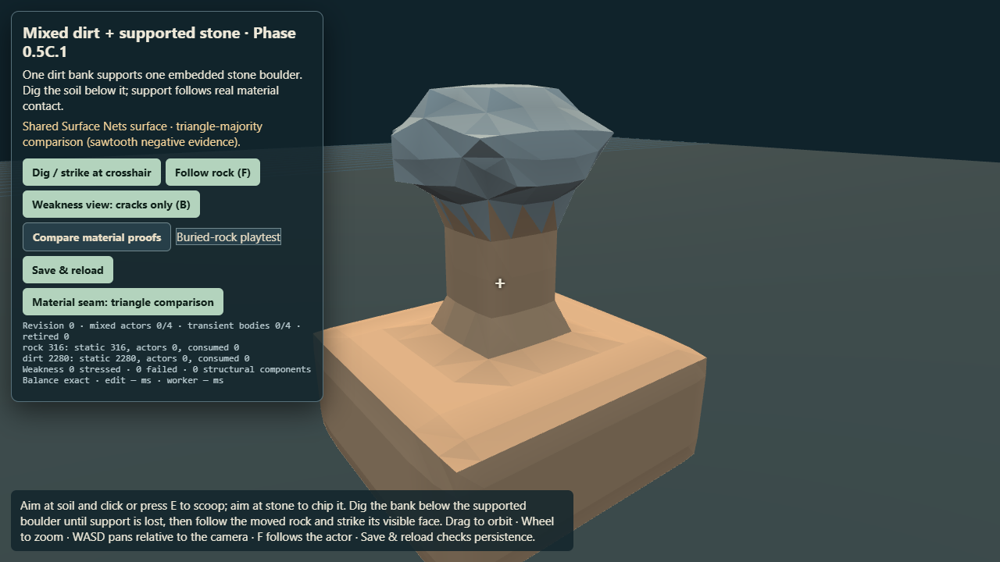
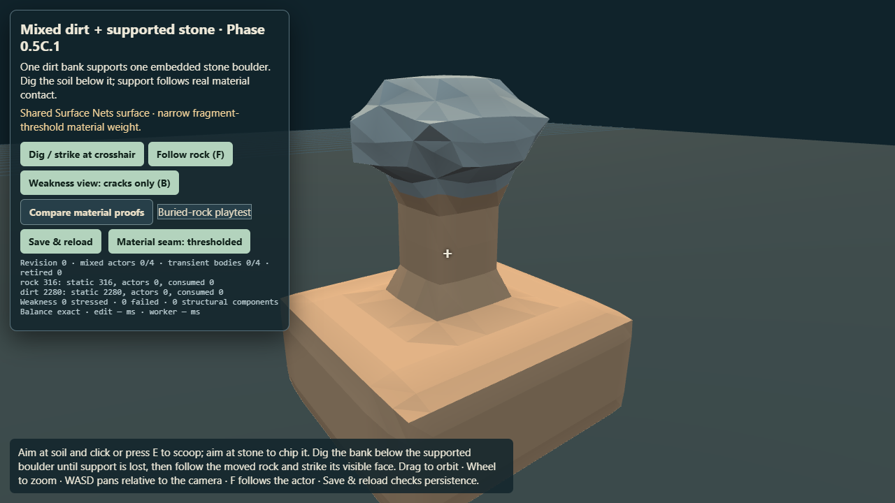
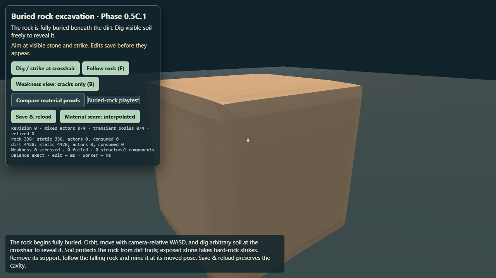
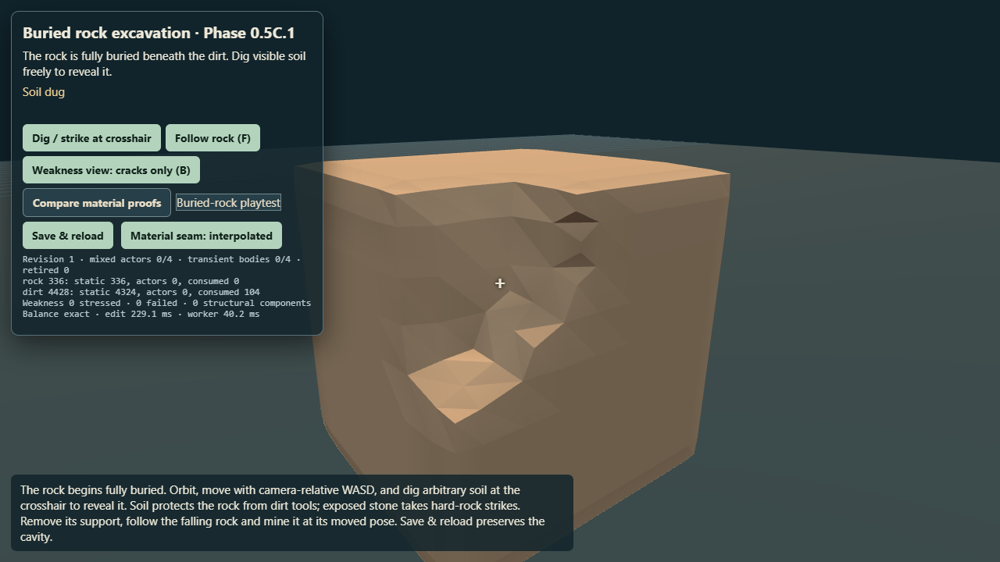
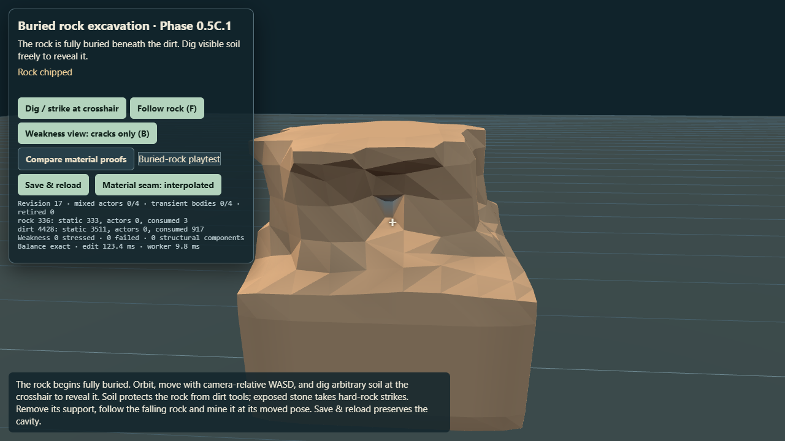

Phase 0.5C.1R — owner playtest remediation
Read the report · Browser receipt
Seam comparison
Current vertex interpolation control, 908 triangles.

Rejected triangle-majority mode retained as negative evidence.

Thresholded continuous material weight on the same 908-triangle geometry.
Buried fixture through normal controls

Initial fixture: 336 rock units are fully covered by soil.

Ordinary crosshair canvas click removes dirt while preserving the rock ledger.

After real mouse orbit and repeated canvas mining: the same world surface progressively exposes rock. Deterministic transaction and Rapier tests cover detachment, settling, moved-actor mining and persistence.